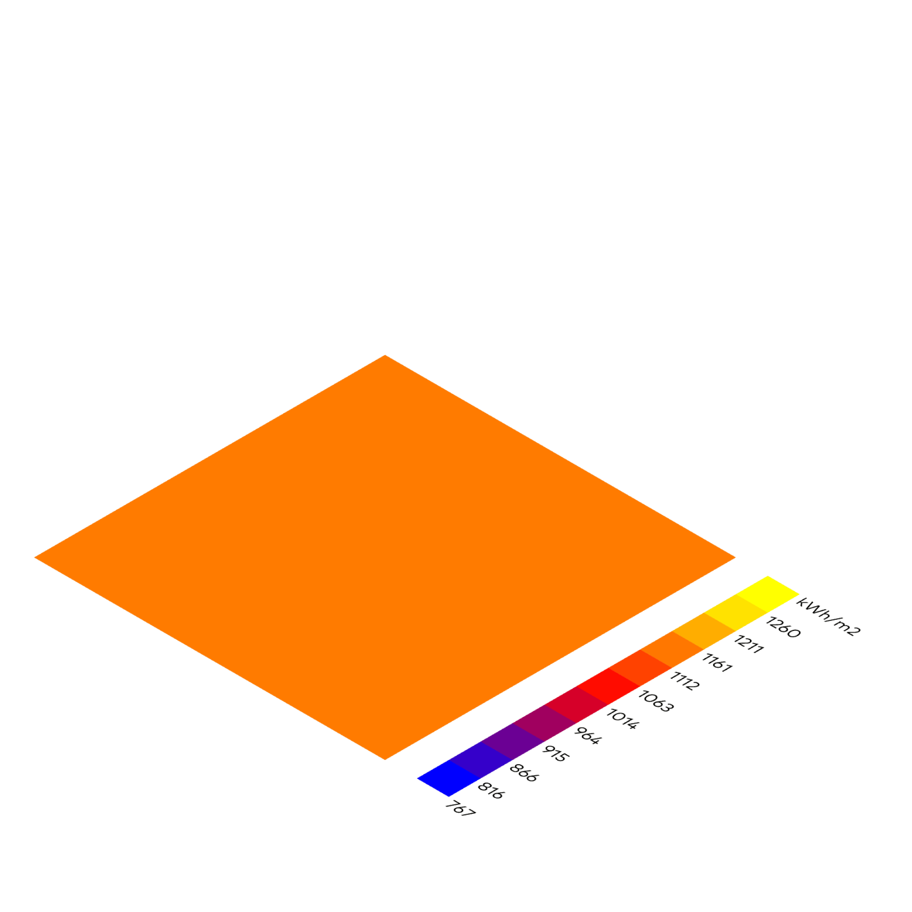
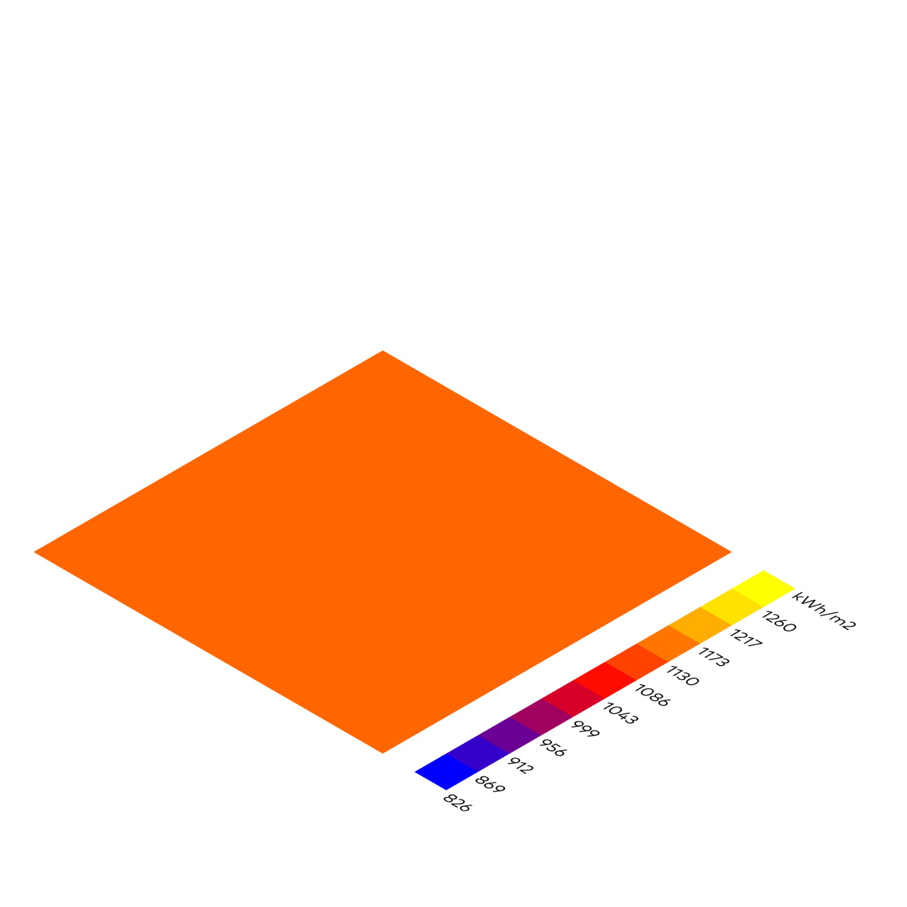
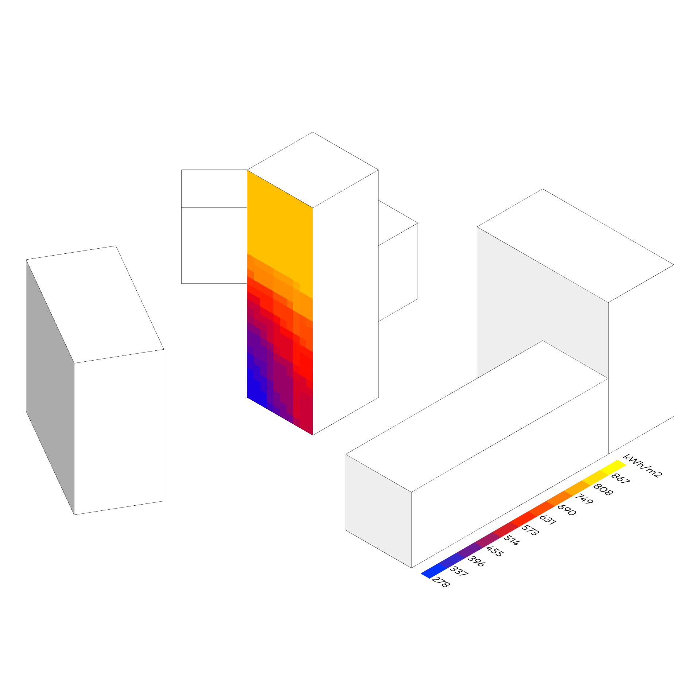

Solarer Ertrag
Ladybug
⬤ Ladybug optimiert solaren Energieertrag (kWh/m²/a) parametrisch – Variation von Ausrichtung (0°–360°) und Neigung (0°–90°) unter Berücksichtigung lokaler Klimadaten, Verschattung und Reflexionen. Saisonale Anpassung: steilere Neigung für Sommer, flachere für Wintererträge. Farbcodierte Mesh-Visualisierung zeigt Ertragsintensität. Direkt einsetzbar für PV-Dimensionierung, Solarthermie und BIPV-Fassaden – maximale Selbstversorgung mit erneuerbaren Energien.
⬤ Ladybug optimizes solar energy yield (kWh/m²/a) parametrically – variation of orientation (0°–360°) and tilt (0°–90°) taking into account local climate data, shading, and reflections. Seasonal adjustment: steeper tilt for summer, flatter for winter yields. Color-coded mesh visualization shows yield intensity. Directly applicable for PV dimensioning, solar thermal energy, and BIPV facades – maximum self-sufficiency with renewable energies.